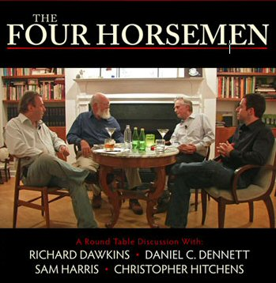
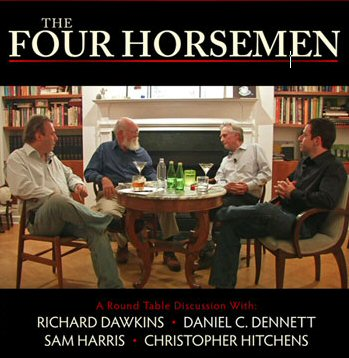

|
|
|
|
|
|
|
|
|
|
|
|
|
|
||
|
|
||||
|
|
|
চার অশ্বারোহী অনুবাদক: অগ্নি অধিরূঢ়

মে ০২, ২০০৮
|
|
|
|
|
|
|
||
|
|
||||
|
|
|
|
|
চার অশ্বারোহী
অনুবাদক: অগ্নি অধিরূঢ়
২০০৭ সালের ৩০ সেপ্টেম্বর রিচার্ড ডকিন্স ফাউন্ডেশন-এর উদ্যোগে একটি আলোচনা সভা অনুষ্ঠিত হয়। দুই ঘন্টাব্যাপী এই খোলামেলা আলোচনা সভায় বক্তারা ধর্ম বিষয়ক বিভিন্ন অভিজ্ঞতা পরস্পরের সাথে বিনিময় করেন। আলোচনায় উপস্থিত ছিলেন:-
ক্রিস্টোফার হিচেনস
ড্যানিয়েল ডেনেট
রিচার্ড ডকিন্স
স্যাম হ্যারিস
'ধর্ম-বিরুদ্ধ' মত প্রকাশের কারণে এই চার লেখক সম্প্রতি মিডিয়ার ব্যাপক মনোযোগ পাচ্ছেন। কারো কাছে ইতিবাচক কারো কাছে আবার নেতিবাচক। নিম্নের আলোচনায় তাদের লেখা সাম্প্রতিক বই সম্পর্কে জনগণের প্রতিক্রিয়া নিয়ে তাঁরা মতবিনিময় করেছেন। সমকালীন বিশ্বে ধর্ম যেসব অনুষঙ্গের মুখোমুখি হচ্ছে সেই জটিল সমস্যা নিয়ে তারা আলোচনা করেছেন, প্রশ্নের উত্তর খুঁজছেন। উত্তরণের উপায় বলে দিয়েছেন।
ছবি তুলেছেন জোস টিমোনেন।
রিচার্ড ডকিন্স: কয়েকটা সাধারণ অভিযোগ আমাদের সবার বিরুদ্ধে আছে। আমরা উদ্ধত, কর্কশ, বিদ্বেষী, গলাবাজি করি ইত্যাদি। এইসব বিবিধ বিষয় নিয়ে আমরা কী ভাবছি?
ড্যানিয়েল ডেনেট: হা! হা! আচ্ছা! আমি বরং এতে আমোদ পাই। কারণ আমি ধর্মপ্রাণ ব্যক্তিদেরকে উদ্দেশ্য করে বই লিখেছি। যখন লিখছিলাম তখন খসড়া লেখাটি পবলভাবে ধর্মভাবাপন্ন কয়েক ছাত্রকে পড়তে দিয়েছিলাম। বাস্তবে একেবারে আশাতীত ঘটনা ঘটল। আমার লেখাকে মানসিক যন্ত্রণা তৈরী করার জন্য দায়ী করা হয়েছিল। ফলে আমাকে কিছু সমন্বয় করতে হয়েছে। কিন্তু তা পরিশেষে তেমন ভাল হয় নি। কারণ আমাকে কর্কশ এবং আক্রমণাত্মক প্রবণতার জন্য বারবার নিন্দা করা হচ্ছিল। শেষ পর্যন্ত বুঝতে পারলাম এ খেলায় জেতা যাবে না। এটা পুরস্কারহীন খেলা। ধর্মগুলো দারুণ ফন্দিবাজ। কোন রকম সমালোচনা সহ্য করা ধর্মগুলোর পক্ষে অসম্ভব। আর, এজন্য রূঢ় না হয়ে উপায় থাকে না।
রিচার্ড ডকিন্স: রূঢ় না হয়ে উপায় থাকে না? বলছেন কি?
ড্যানিয়েল ডেনেট: তারা কিন্তু আবেগের খেলা খেলে এবং এক বিশেষ রকম পছন্দের পক্ষে থাকে। অতএব আমাকে .... আমার কি রাগ করা উচিত নাকি চিৎকার করে সমালোচকদের উত্তর দিব। সমালোচনার উত্তরে চেচামেচি করবো? মানে আমি বলতে চাচ্ছি আমরা কি চিৎকার করবো নাকি ঠোটদুটোকে বোতাম লাগিয়ে বন্ধ করে দেব।
স্যাম হ্যারিস: ঠিক বলেছেন। আপনাদের বক্তব্য লোকাচারকে ধ্বংস করে দেয়। আমার মনে হয় আমরা সকলে একই সমস্যার শিকার। ধর্ম যৌক্তিক সমালোচনাকে মেনে নেয় না। তা আপনি যতই আনুষ্ঠানিকভাবে বলুন না কেন, ধর্ম তা স্বীকার করে না। প্রিয় সেকুলারিস্ট এবং অবিশ্বাসীগণ এটা আপনারা হয়তো আগে থেকেই জানেন। তাই আমার মনে হয়, মানুষকে তাদের কুসংস্কার নিয়ে থাকতে দেয়া উচিত। এই সব হীন ধারণা যতই ক্ষতি করুক না কেন তাদের দিকে তাকানোর কোন দরকার নেই।
ড্যানিয়েল ডেনেট: হ্যাঁ, ঠিক এটাই বলতে চেয়েছিলাম। আমার বইয়ের নামকরণে এর ছাপ আছে। আমাদেরকে এই অর্গল ভাঙতে হবে। কিন্তু যদি জনগণের উন্মত্ততাকে অধিকার দেয়া হয় তাহলে আমার ধারণা আমরা দুজনই আরও বেশি আক্রমণ ও বিদ্রুপের শিকার হব। তারমানে তারিক রমজানকে যে পছন্দ করে তার সাথে শুধু মতের অমিল হওয়া নয়। বিষয়টা আরও কঠিন। তারিক রমজানকে চিনলেন না- আরে, তিনি এখন অক্সফোর্ড বিশ্ববিদ্যালয়ের একজন নামজাদা বক্তা। অবশ্য বেশিরভাগ সময় তিনি তার নিজের প্রত্যাশার কথাই বেশিবেশি বলেন। কিন্তু যখন নারীকে পাথর ছোঁড়ার প্রসঙ্গ আসে তখন আইনের কথা বলেন। পাথর ছোড়া বিষয়ে স্থানীয় আইনের বাইরে তিনি যেতে চান না বা বেশি কিছু বলতেও চান না। আমার কাছে তাকে বিরক্তির চাইতে বেশি ভাল লাগেনি।
স্যাম হ্যারিস: ঠিক, হ্যাঁ, কিন্তু আমি ভাবছি....
ক্রিস্টোফার হিচেনস: বিদ্রুপ? শুধু বিদ্রুপ নয়, আসলে তারা হুমকি দিচ্ছিল।
স্যাম হ্যারিস: কিন্তু আপনি রেগে যাননি। এসব ব্যাপারে ব্যক্তিগতভাবে আপনাকে কখনও জড়াতে দেখিনি। যেমন রমজানের কেসে আপনাকে শান্ত ও ধীর থাকতে দেখা গেছে। বিবিধ চিন্তাভাবনা থেকে প্রাপ্ত নীতিবোধ আপনাকে সতর্ক করেছে।
ক্রিস্টোফার হিচেনস: হ্যাঁ। কিন্তু তার মত মানুষেরা বলবে যে মোহাম্মদের ঐতিহাসিকতায় সন্দেহ পোষণ করে তাদের মনের গভীরে, মর্মঃস্থলে আমি আঘাত করেছি।
স্যাম হ্যারিস: ঠিক।
ক্রিস্টোফার হিচেনস: আচ্ছা, ঘটনা হল, প্রত্যেক মানুষই আক্রমণের শিকার হতে পারে। অন্তত: তাদের বিবেকের সততা দিয়ে এটা সবাই বুঝতে পারে। কুসংস্কারহীন ধর্ম কিংবা স্বর্গীয় স্বৈরাচার কোনটা সঠিক আর কোনটা বেঠিক আমরা তা জানিনা। আমরা বাঁচি আসলে....
স্যাম হ্যারিস: তুমি কি সত্যিই এমন আক্রান্ত হয়েছিলে? এর কারণ কি? শুধু কি পরস্পরকে ভুল বোঝাবুঝি নাকি অন্য কিছু?
ক্রিস্টোফার হিচেনস: না, আমি শুধু বলতে চাই এই ধরণের আপত্তিকর আক্রমণ যদি প্রকাশ্যে মেনে নেয়া হয় বিশেষ করে মিডিয়া যদি তা প্রচার করে তাহলে তা খারাপ হবে। আমার ধারণা আমাদেরকে আক্রমণের জবাব আরও বেশি করে দিতে হবে। আত্মপক্ষ সমর্থনের সুযোগ আমরা পাবো না, ওরা দেবেও না, অথবা নিজেদেরকে নির্যাতিত সংখ্যালঘু হিসেবে পরিচয় দিতে হবে। এটা বরং উল্টো বিপদ ডেকে আনবে। আমি এ বিষয়ে একেবারে নিঃশংসয়। আমি ড্যানিয়েলের সাথেও একমত। আসলেই আমাদের বিরুদ্ধে যে ধরণের আক্রমণ পরিচালনা করা হয় তাকে উপেক্ষা করার কোন উপায় নেই। কারণ আমরা যা বলি তা অনেক সময় প্রবলবিশ্বাসীর অন্তরের অন্তঃস্থলে আঘাত হানে। যেমন. আমরা যিশুর পবিত্রতা প্রত্যাখ্যান করি। এটা হয়তো তাদেরকে তীব্রভাবে ব্যথা দেয়। এটা আসলেই খুব খারাপ। :)
রিচার্ড ডকিন্স: যে কোন কিছুর বিরুদ্ধে সাধারণ মানুষের অসন্তোষের পরিমাণ এবং ধর্মের অসন্তুষ্টির পরিমাণ এ দুয়ের তুলনা আমাকে বিমূঢ় করে দেয়। এ যেন অন্যরকমের এক শৈল্পিক আস্বাদ, যেমন সঙ্গীতের মূর্চ্ছনা, চিত্রকলার সৌন্দর্য বা রাজনীতির অনবদ্য ভঙ্গি। যতোটা চান ততোটা রূঢ় হয়তো আপনি হতে পারেন না, কিন্তু ঘটনাপ্রবাহ আপনাকে প্রত্যাশার চাইতে আরও অনেক বেশি রূঢ় করে তুলবে। আমি এটা পরিমাপ করতে পছন্দ করি। সক্রিয়ভাবে আমি মানুষের এমন আচরণ নিয়ে গবেষণা করি। প্রিয় ফুটবল দল সম্পর্কে সমর্থকদের উচ্ছ্বাস, কোন প্রিয় গান শুনে যে আনন্দ অনুভব করি অথবা অন্যকিছু। ধর্মপ্রাণদের রাগিয়ে দেবার জন্য আপনি কতদূর যেতে পারেন এটা দেখতে আমার খুব ভাল লাগে। এটাকে তুলনা করা যায়, উমমম..... আচ্ছা, আমি যা বললাম তা ছাড়া আর কি কিছু আপনাদের জানা আছে। ওদের চোখে আপনি দেখতে কতটুকু কুৎসিত এটা জেনে আমি বেশ তৃপ্তি পাই।
ক্রিস্টোফার হিচেনস: অথবা, আপনার স্বামী বা স্ত্রী অথবা বান্ধবী বা সঙ্গীর মুখচ্ছবি।
রিচার্ড ডকিন্স: হ্যাঁ, হ্যাঁ, হ্যাঁ, হ্যাঁ
ক্রিস্টোফার হিচেনস: হ্যাঁ, আপনি যা বলেছেন তা সত্যিই মজার। কারণ জন ডোনাহু নামের এক ভয়ংকর লোকের সাথে আমার প্রতিদিন জুঝতে হয়। তিনি ক্যাথলিক ডিফেন্স লীগ এর একজন সক্রিয় সদস্য। এই সংঘ আধুনিক চিত্রশিল্পের উপর যারপরনাই খুব বিরক্ত। ‘প্রস্রাবরত যিশু’ বা ‘কুমারীর মাথায় হাতির মল’ এবং এ ধরণের আরও কিছুর কারণে তারা ব্লাসফেমি আইনের প্রতি মনোযোগী হচ্ছেন। আমার ধারণা এই যে আমরা পরস্পর অভিজ্ঞতা বিনিময় করছি এর প্রয়োজন আছে। সফোক্লিস বা অন্য প্রাথমিক যুগের একেশ্বরবাদীদের মত, হঠাৎ কোন গোপন কিছুকে উন্মুক্ত করা বা পবিত্র বস্তুকে অবজ্ঞা করার মত। গির্জার অবগুণ্ঠন উন্মোচন করা হোক তা আমরা অনেকেই চাই না।
রিচার্ড ডকিন্স: না, আসলেই না।
ক্রিস্টোফার হিচেনস: অথবা ধর্মীয় মূর্তিগুলোকে ফেলে দেয়া এরকম যে কোন কিছু সম্পর্কে এ কথা খাটে। তবে ধর্মের সৌন্দর্য উপভোগ করতে আমি খুব মজা পাই।
স্যাম হ্যারিস: ঠিক, আমার ধারণা এই সমস্ত ব্যাপার হল... আমার ধারণা, আমাদের সমালোচনা একটু বেশি বেদনাপ্রদায়ী। এটা সহজবোধ্য যে, আসলে আমরা এমন নই। আমরা মানুষকে ব্যঙ্গ করি। কিন্তু পাশাপাশি আমরা এটাও বলি যে, তারা ভুল করছে। এর মানে, পদার্থবিজ্ঞান সম্পর্কে বিভ্রান্তিকর দৃষ্টিভঙ্গীর কারণে বিজ্ঞানীরা হাস্যকর হয়ে ওঠেন না। আমার ধারণা, পৃথিবীতে কোনটা সত্য এটা যখন তারা খুঁজতে চায় তখন যে পদ্ধতি গ্রহণ করা হয় তা যৌক্তিক পদ্ধতি নয়। আর ধর্মের অন্তর্নিহিত অর্থ বাস্তবতার সাথে তুলে ধরতে হবে। আর এখনও তারা তাদের বিকৃত, প্রাচীন এবং পরিশেষে বিপদজনক প্রতিউত্তর দিয়ে আমাদের ভাবনাগুলোর ক্ষিরোধীতা করে। আমার ধারণা ওই সব ঘটনার সম্পূর্ণ দায়দায়িত্ব আমাদের নিজের।
ড্যানিয়েল ডেনেট: আচ্ছা, শোন, আসলেই কাউকে কিছু বলার জন্য বিনীত হবার কোন সুযোগ নেই।
স্যাম হ্যারিস: তুমি তোমার জীবনীশক্তির অপচয় করছো।
ড্যানিয়েল ডেনেট: নিজের জীবন নিয়ে তোমারও একইরকম সন্দেহ আছে নাকি? শুধুমাত্র একটা মিথকে মাথায় রাখার জন্য জীবনের সমস্ত উৎসাহ, উদ্দীপনা ব্যয় করে চলেছো এমন কি তোমার কখনও মনে হয়? অথবা তোমার বিবেচনাবোধ হয়তো জানে যে তোমার জীবন কিভাবে তুমি অপচয় করেছো। আসলে এসব বলার মার্জিত কোন উপায় নেই, বুঝলে? তারপরও আমাদেরকে এসব বলতে হবে। এভাবেই বলতে হবে। কারণ, হয়তো তারা বিষয়টা বুঝে আশ্বস্ত হবেন। যেমন আমরা নিজেরা বুঝেছি এবং নিজের জীবনে তা প্রয়োগ করে সানন্দ দিন যাপন করছি।
স্যাম হ্যারিস: ওহ! তা তো বটেই।
রিচার্ড ডকিন্স: ড্যান বার্কার বেশ কয়েকজন যাজকের একটি তালিকা করেছেন। তারা তাদের বিশ্বাসকে হারিয়ে ফেলেছেন কিন্তু তা প্রকাশ করার মত সাহস পাচ্ছেন না। কারণ ওই যাজকগিরি করাই তাদের জীবন। একমাত্র এই কাজটিই তারা ভাল জানেন এবং পারেন।
স্যাম হ্যারিস: হ্যাঁ, আমি তাদের একজনের কথা শুনেছি।
রিচার্ড ডকিন্স: তুমি শুনেছো? সত্যি?
.... চলবেমে ০২, ২০০৮